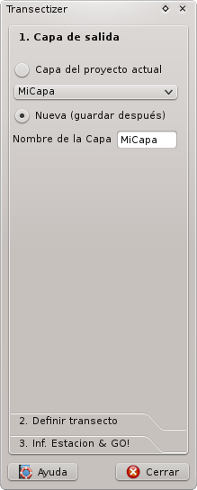
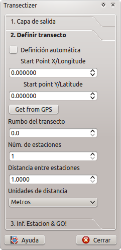
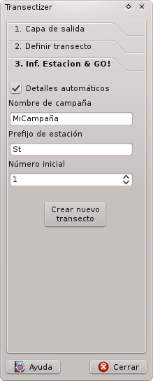
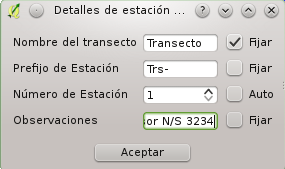

Transectizer es un plugin QGIS que proporciona una manera sencilla de diseñar transectos lineales con estaciones de muestreo distribuidas a una distancia determinada a lo largo del transecto.
Transectizer hace posible generar automáticamente los detalles de cada estación individual (nombre del transecto/campaña, nombre de la estación, número de estación) o tener control sobre todos los atributos de cada estación.
Puede almacenar los transectos en una nueva capa o en una capa existente. En el caso de que la capa no sea compatible con Transectizer hará los cambios apropiados en la capa para hacerla compatible con Transectizer.
Transectizer ha sido desarrollado por Jorge Tornero.
(C) 2013, 2014 Jorge Tornero, http://imasdemase.com
Transectizer se libera bajo los términos de la
Este programa es software libre: usted puede redistribuirlo y/o modificarlo bajo los términos de la Licencia Pública General GNU publicada por la Fundación para el Software Libre, ya sea la versión 3 de la Licencia, o (a su elección) cualquier versión posterior.
Este programa se distribuye con la esperanza de que sea útil, pero SIN GARANTÍA ALGUNA; ni siquiera la garantía implícita MERCANTIL o de APTITUD PARA UN PROPÓSITO DETERMINADO. Consulte los detalles de la Licencia Pública General GNU para obtener una información más detallada. Usted debería haber recibido una copia de la Licencia Pública General GNU junto a este programa. En caso contrario, consulte:
No se requiere, por supuesto, de cuota o donación ninguna para que Transectizer funcione... si, no obstante, siente que Transectizer ha mejorado algún aspecto de su vida, puede hacer una pequeña donación a una ONG de su elección para celebrarlo. Hacer una pequeña donación al proyecto QGIS también puede ser una buena idea, teniendo en cuenta que nada de este invento sería posible sin él.
Si, además, se siente realmente con ganas de recompensar mi esfuerzo, Contacte conmigo a través de correo electrónico o twitter y envíeme una postal desde donde viva. Será un honor incorporarla a mi (aún inexistente) colección de postales y enseñárselas, orgulloso, a mi niño de 4 años.
Transectizer calcula las posiciones de las estaciones haciendo uso de la fórmula directa de Vincenty y el elipsoide WGS84 para la realización de los cálculos, pasando a la fórmula el mismo punto inicial pero diferentes distancias hasta el destino. Estas distancias son los n-múltiplos de la distancia entre estaciones, siendo n el número de estación a ser posicionada. Pero otra aproximación consiste en fijar la distancia que se le pasa a la fórmula pero moviendo el punto desde el que se efectúa el cálculo: El primer punto es el punto de comienzo, el segundo se calcula desde el primero, el tercero desde el segundo y así sucesivamente. Dado que estas dos aproximaciones devuelven resultados diferentes, si cree que o bien el método de cálculo que he escogido para Transectizer no es válido o, que por el contrario, que ambos métodos deben estar disponibles para que el usuario escoja uno u otro en función de sus necesidades, contacte conmigo. Estaŕe encantado de modificar Transectizer de la mejor manera posible.
La operación básica de Transectizer es simple: Escoja una capa vectorial de puntos sobre la que operar, defina la línea del transecto, establezca la distancia entre las estaciones que se posicionarán y su número y ¡¡listo!! Transectizer añadirá cada estación como un nuevo objeto en su capa.

Esta parte del diálogo principal de Transectizer es auto-explicativa, pero existen algunos detalles a tener en cuenta:
1) Al escoger una capa existente, Transectizer comprobará si la capa escogida tiene los atributos que necesita Transectizer para funcionar:
Si la capa escogida no tiene esos atributos, será preguntado si desea crearlas dentro de su capa o cancelar la operación.
2) ¡ATENCIÓN! Al crear una capa nueva, será creada como una capa de memoria, por lo que es obligatorio guardarla a fichero si desea conservar la información.

Esta parte del diálogo hace posible definir la línea a lo largo de la cual se ubicarán las estaciones (¡¡Síiii, eso es el transecto!!)
El transecto se definde facilitando un punto inicial, un rumbo para la línea y una distancia entre estaciones. A estos efectos, Transectizer dispone de dos modos de operación:
*1) Definición automática del transecto: Para establecer este modo de trabajo, debe marcar el checkbox Definición automática. Haga click sobre el mapa para establecer el punto inicial del transecto y, a continuación, arrastre el ratón. El cursor del ratón le informará sobre el rumbo del transecto mmientras define la línea. Suelte el botón del ratón cuando lo considere apropiado y el punto de partida y el rumbo de su transecto se habrán definido.
En cualquier momento del proceso de definición automática, preste atención a la barra de estado de QGIS, que le proporcionará instrucciones para completar el proceso.
Las herramientas de definición automática del transecto sólo están disponibles cuando la pestaña de definición del transecto está activa.
2) Definición manual del transecto (por defecto): Teclee o ajuste los spinbox de X/Lon e Y/Lat para definir las coordenadas de su punto inicial. Debe proporcionar las coordenadas de los puntos en el mismo SRC que su proyecto. Teclee o ajuste el rumbo del transecto en el spinbox de rumbo y ya estará listo para continuar el proceso.
Si existiera una conexión GPS disponible, puede establecer su posición actual como punto de partida para el transecto, simplemente presionando el botón Obtener desde GPS
Después de definir la línea del transecto, debe proporcionar la distancia entre estaciones, seleccionado sus unidades del combobox de unidades de medida y el número de estaciones a ser posicionadas. Por el momento, las unidades de medida disponibles son metros, kilómetros, pies, yardas, millas y millas naúticas. Si desea usar otro múltiplo o submúltiplo de estas unidades, ajuste el valor apropiado en la distancia entre estaciones. Por ejemplo, si desea posicionar estaciones/puntos de muestreo cada centimetro, ajuste la distancia entre estaciones a 0.01 y seleccione la unidad metros.

Cada una de las estaciones posicionadas puede tener cierta información asociada. Una capa capaz de trabajar con Transectizer ha de tener, al menos, los atributos/campos descritos en la sección Escogiendo la capa de más arriba. Transectizer tiene dos modos de funcionamiento que proporcionan al usuario cierto control y capacidad de personalización sobre la información almacenada con las estaciones. Puede escoger el modo de operación marcando/desmarcando el checkbox Detalles automáticos en la pestaña 3. Inf. estación &GO!! del diálogo de Transectizer.
1) Detalles automáticos (por defecto): Mediante este modo de operación usted podrá proporciona un nombre de campaña/transecto, un prefijo para estación fijos y un número inicial de estación que se incrementará secuencialmente para todas las estaciones. En este caso, no está permitida la adición de comentarios/observaciones.
2) Detalles manuales: Al crear el transecto, se le ofrecerá un diálogo como el siguiente:

En este caso, se tiene total control sobre los campos/atributos de cada estación. Puede proporcionar un nombre de campaña/transecto personalizado, así como el prefijo de la estación, su número y observaciones para cada una de las estaciones posicionadas. Puede fijar a voluntad estas variables marcando el checkbox Fijar junto a cada uno de los parámetros e incluso hacer el número de estación secuencial marcando el checkbox Auto junto al campo de número de estación. Por ejemplo, si desea mantener el mismo nombre de campaña/transecto para cada una de las estaciones, marque el checkbox correspondiente y se mantendrá fijo durante todas las estaciones. Esto puede ser útil en el caso de desear dar un prefijo diferente en las estaciones pares o en las impares, para indicar actividades de muestreo diferentes dentro de un mismo transecto, por ejemplo.
¡¡Tenga en cuenta que este diálogo aparecerá para cada una y todas las estaciones a posicionar, lo que puede ser muy tedioso en el caso de diseñar transectos con un número de estaciones elevado!!!!
Después de haber completado todos los pasos anteriores, presione el botón Crear nuevo transecto para crear el transecto en la capa escogida anteriormente. Puede crear tantos transectos como desee en la misma capa.